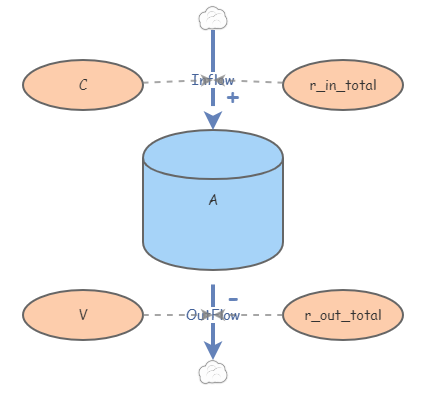
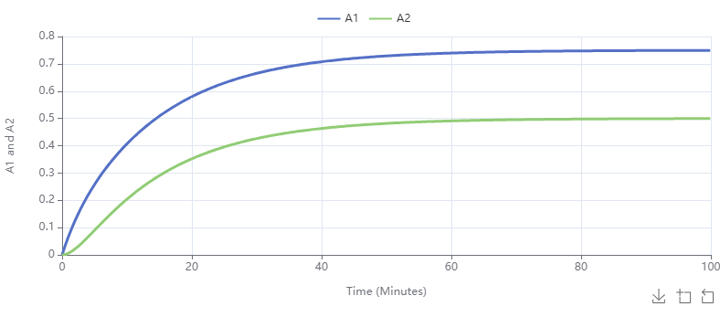
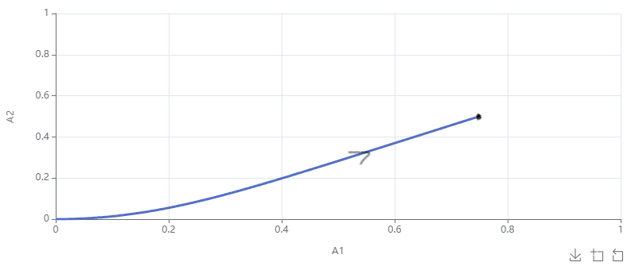
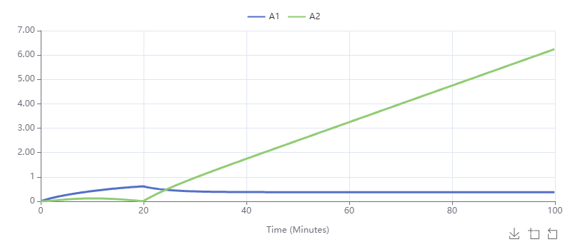

Introduce mixing in and single tank as a first order differential equation.
Create and analyze systems of interconnected tanks as linear systems of ODEs.
Use a conditional in formulas for flow rates.
A standard first-order ODE is associated to the following problem type:
Problem3.2.1.The Basic Salt Tank Problem.
A brine (salt water) solution of conentration \(C\) kg/L at a rate of \(r\) L/min flows into a tank of volume \(V\) of initially pure water. A well-mixed solution drains out the bottom of the tank at \(r\) L/min. How much salt is in the tank as a function of time?
We call these problems "salt tank problems".
In this section we explore this type of problem in general with multiple tanks and perhaps without conserved volumes. The worksheet in the next section presents the modeling scenario in [13] and section 6.5.1 of [3]
Subsection3.2.1Basic Mixing Problems
To present the problem in Problem 3.2.1 in ODE form, letting \(A\) denote the amount of salt in the tank at a time of \(t\) minutes, we have
\begin{equation*}
A' = rC - \frac{A}{V}r,\ A(0) = 0.
\end{equation*}
We can arrive at essentially through unit analysis. Since the amount of salt in a tank sounds exactly like a stock, we can represent it as the following Insight:
Figure3.2.2.The basic one-tank mixing Insight.
We may determine the solution of this IVP analytically to be
\begin{equation*}
A = VC(1-e^{-\frac{r}{V}t})
\end{equation*}
Running the given Insight with \(V = 8\text{,}\)\(r = 2\text{,}\) and \(C = 0.25\) (all with associated units) yields the corresponding graph
Figure3.2.3.The graph of a solution to the basic salt tank problem. The long run equilibrium amount of salt in the tank is \(2\)kg. This makes sense as it yields a concentration of \(0.25\)kg/L. In the log run all the mixture in the tank is inflow mixture.
Checkpoint3.2.4.
In your own copy of Figure 3.2.2, create a variable that is equal to \(|\text{Inflow} - \text{Outflow}|\text{.}\) For a given \(r\text{,}\)\(V\text{,}\) and \(C\text{,}\) use the optimization algorithm to find the equilibrium value of \(A\) by imnimizing the integral of this new variable.
Now we will consider the following questions:
What if there are several interconnected tanks?
What if the inflow and outflow rates are not the same?
Subsection3.2.2Two Tanks with Constant Fluid Volume
Consider the first problem:
The Two Tank Mixing Problem.
Consider two interconnected tanks initially containing fresh water, call them Tank 1 and Tank 2, of volumes \(V_1\)L and \(V_2\)L, respectively. A brine solution of concentration \(C\)kg/L flows into Tank 1 from an external source at a rate of \(r_{\text{in}}\)L/min. A well-mixed solution froms from Tank 1 to Tank 2 at a rate of \(r_{12}\) L/min and from Tank 2 to Tank 1 at a rate of \(r_{21}\)L/min. Finally, a well-mixed solution exits Tank 2 at a rate of \(r_{\text{out}}\)L/min.
This is a scenario where building the Insight is perhaps easier than building the differential equations first. We do so as follows:
Create stocks \(A_1\) and \(A_2\) for the amount of salt, in kg, in Tank 1 and Tank 2, respectively. Both should have initial values of zero.
Create flows into Tank 1 from the outside and from Tank 2. Likewise, create flows out of Tank 2 to the outside and to Tank 1.
Create variables for \(C\text{,}\)\(V_1\text{,}\)\(V_2\text{,}\)\(r_{\text{in}}\text{,}\)\(r_{\text{out}}\text{,}\)\(r_{12}\text{,}\) and \(r_{21}\text{.}\)
Now we need to create links based on what the various salt rates depend on. The best strategy for this is to take each tank and apply the idiom diagram shown below, which corresponds to the ODE
\begin{equation*}
A' = Cr_{\text{in total}} - r_{\text{out total}}\frac{A}{V}
\end{equation*}

Figure3.2.5.The one tank mixing idiom. Splitting the inflows and outflows as necessary for each tank we may obtain the following table of linkages:
Table3.2.6.Variable Links in a Two Tank Mixing Problem
Link
Source
Target
1
\(C\)
External Flow into Tank 1
2
\(r_{\text{in}}\)
External Flow into Tank 1
3
\(V_1\)
Tank 1 to Tank 2
4
\(r_{12}\)
Tank 1 to Tank 2
5
\(r_{21}\)
Tank 2 to Tank 1
6
\(V_2\)
Tank 2 to Tank 1
7
\(V_2\)
External Flow out of Tank 2
8
\(r_{\text{out}}\)
External Flow out of Tank 2
Figure3.2.7.The full two-tank diagram.
While this diagram may seem complicated, we now see that each ODE in our system will have three terms, what their signs are, and on what variables they depend. We have
Using these to build our flow rates in the diagram. Using parameter values indicated in the table nad running for \(100\) minutes, we obtain the following (Insight):
\(C\)
\(0.25\)
\(V_1\)
\(3\)
\(V_2\)
\(2\)
\(r_{\text{in}}\)
\(0.3\)
\(r_{12}\)
\(0.6\)
\(r_{21}\)
\(0.3\)
\(r_{\text{out}}\)
\(0.3\)
Figure3.2.8.Two tank time series graphs.
In each of these graphs we see the long run behavior yields a concentration of about \(0.25\)kg/L, as expected. We can also see the equilibrium solutions approached in the following scatter plot:

Figure3.2.9.Scatter plot for the two tank problem. Dot at the equilibrium and arrow added.
Subsection3.2.3Two Tanks without Constant Fluid Volume
Notice that in the previous section we carefully chose our flow rates into and out of each tank so that the net inflow was zero. That is,
If this is not the case, then we will need to modify our model slightly and be careful of division by zero.
In order to allow for the volume in each tank to be variable, we create links to the volume variables, \(V_1\) and \(V_2\text{,}\) from the appropriate rate variables. Now, after removing the sliders for \(V_1\) and \(V_2\text{,}\) we may enter
in the formulas for \(V_1\) and \(V_2\text{,}\) respectively (with initial volumes as in the previous section). Note that care with units must be taken when entering these formulas; the first would be entered as {3 Liters}+([r_in]-[r_1_2]+[r_2_1])*{Minutes() Minutes}.
Now if we run the simulation with \(r_{\text{out}} = 0.4\text{,}\) we obtain the time series graphs

Figure3.2.10.Variable volume salt tank amounts without worrying about zero or negative volumes. We have a problem because the volume of liquid in Tank 2 approaces zero in \(20\) minutes. This is when we can use one of the most powerful features of Insightmaker.
Conditional Flow Rates.
Using the If Then Else function in the General Functions Menu, we can add conditions to our flow rates. The syntax is given by IfThenElse(Test Condition, Value if True, Value if False).
In our case we must link \(V_1\) and \(V_2\) to all flows and apply the condition that both volumes are positive to all the flow rates. For instance, the Outflow flow rate will be given by IfThenElse([V1]>{0 Liters} and [V2]>{0 Liters},[r_out]*[A2]/[V2],0). Applying this we obtain the following time series:
Figure3.2.11.Variable volume salt tank amounts using a conditional to deal with zero or negative volumes. Now we see the flows all turn off at \(20\) seconds.
The Insight for this scenario may be found at Variable Volume Mixing Insight. One could argue the number of links starts to make the Insight inelegant. At this stage it might be useful to experiment with ghosting primitives (see ghosting). A slightly more visually pleasing Insight is available at with ghosts.
Checkpoint3.2.12.
Try to re-create the results of the variable volume tanks using stocks for each volume. This will avoid putting explicit formulas for the volumes as functions of time.